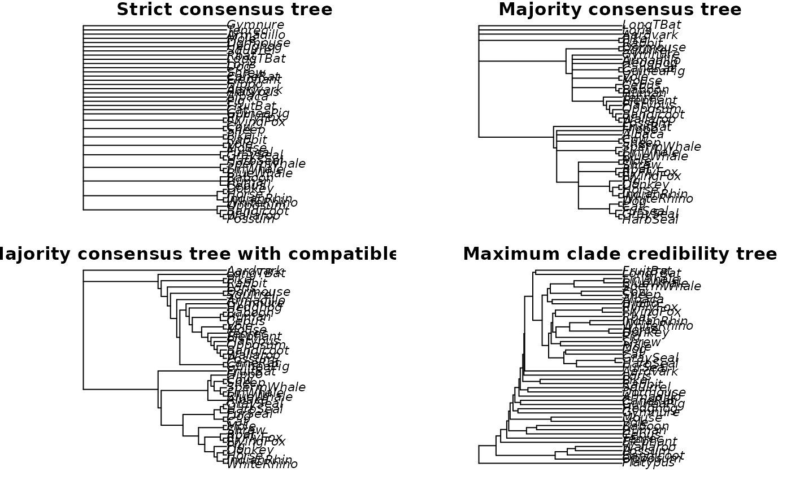
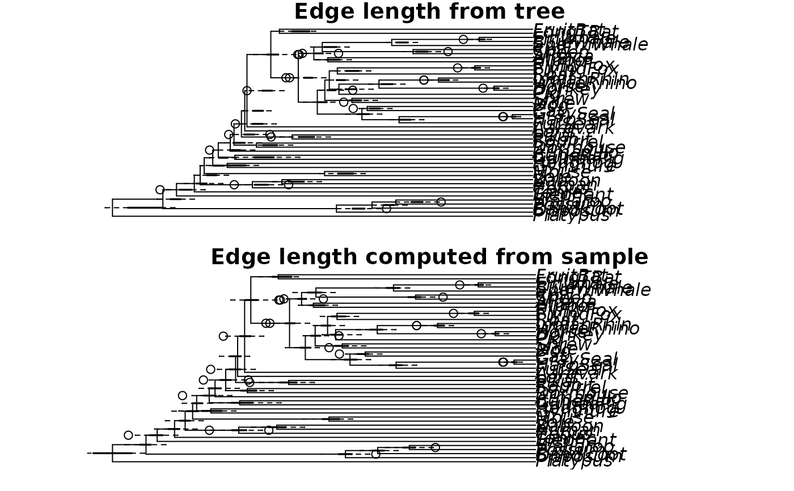

maxCladeCred computes the maximum clade credibility tree from a
sample of trees.
So far just the best tree is returned. No annotations or transformations of
edge length are performed and the edge length are taken from the tree.
Usage
maxCladeCred(x, tree = TRUE, part = NULL, rooted = TRUE)
mcc(x, tree = TRUE, part = NULL, rooted = TRUE)
allCompat(x, rooted = FALSE)Arguments
- x
xis an object of classmultiPhyloorphylo- tree
logical indicating whether return the tree with the clade credibility (default) or the clade credibility score for all trees.
- part
a list of partitions as returned by
prop.part- rooted
logical, if FALSE the tree with highest maximum bipartition credibility is returned.
Value
a tree (an object of class phylo) with the highest clade
credibility or a numeric vector of clade credibilities for each tree.
Details
If a list of partition is provided then the clade credibility is computed for the trees in x.
allCompat returns a 50% majority rule consensus tree with added
compatible splits similar to the option allcompat in MrBayes. This tree has
no edge length.
add_edge_length can be used to add edge lengths computed from
the sample of trees.
Author
Klaus Schliep klaus.schliep@gmail.com
Examples
data(Laurasiatherian)
set.seed(42)
bs <- bootstrap.phyDat(Laurasiatherian,
FUN = function(x)upgma(dist.hamming(x)), bs=100)
strict_consensus <- consensus(bs)
majority_consensus <- consensus(bs, p=.5)
all_compat <- allCompat(bs)
max_clade_cred <- maxCladeCred(bs)
old.par <- par(no.readonly = TRUE)
par(mfrow = c(2,2), mar = c(1,4,1,1))
plot(strict_consensus, main="Strict consensus tree")
plot(majority_consensus, main="Majority consensus tree")
plot(all_compat, main="Majority consensus tree with compatible splits")
plot(max_clade_cred, main="Maximum clade credibility tree")

par(mfrow = c(2,1))
plot(max_clade_cred, main="Edge length from tree")
add_boxplot(max_clade_cred, bs)
max_clade_cred_2 <- add_edge_length(max_clade_cred, bs)
plot(max_clade_cred_2, main="Edge length computed from sample")
add_boxplot(max_clade_cred_2, bs)

par(old.par)
# compute clade credibility for trees given a prop.part object
pp <- prop.part(bs)
tree <- rNNI(bs[[1]], 20)
maxCladeCred(c(tree, bs[[1]]), tree=FALSE, part = pp)
#> [1] -Inf -36.10917
# first value likely be -Inf